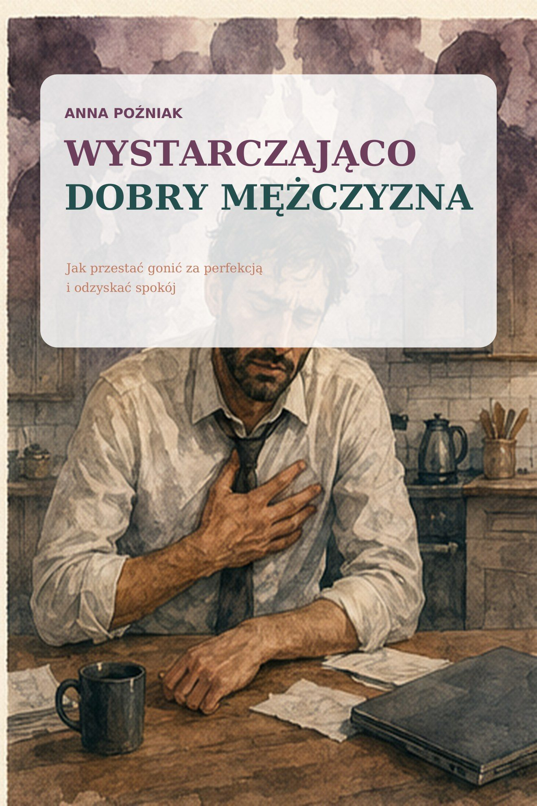
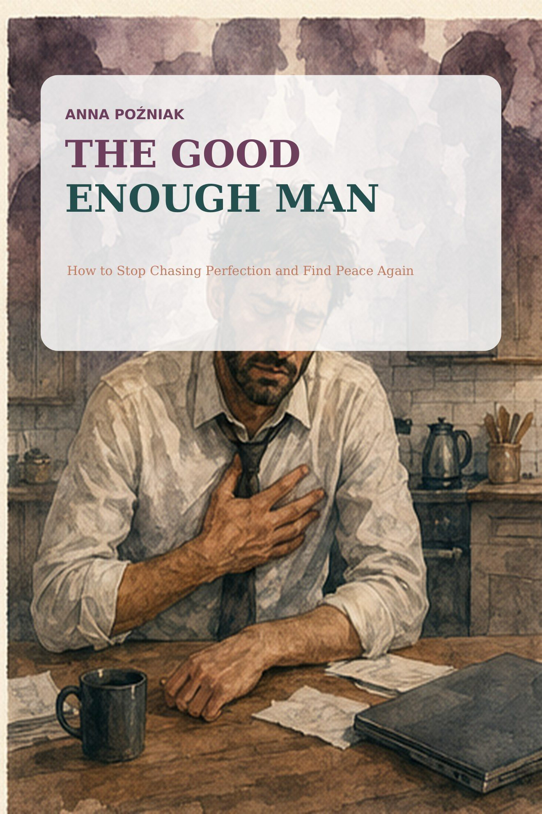
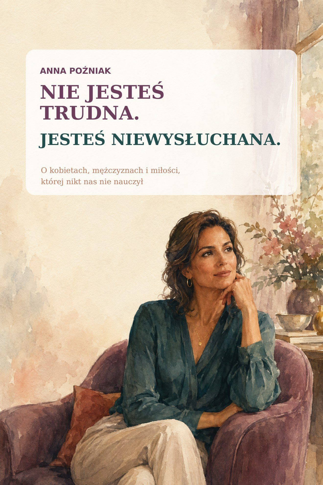
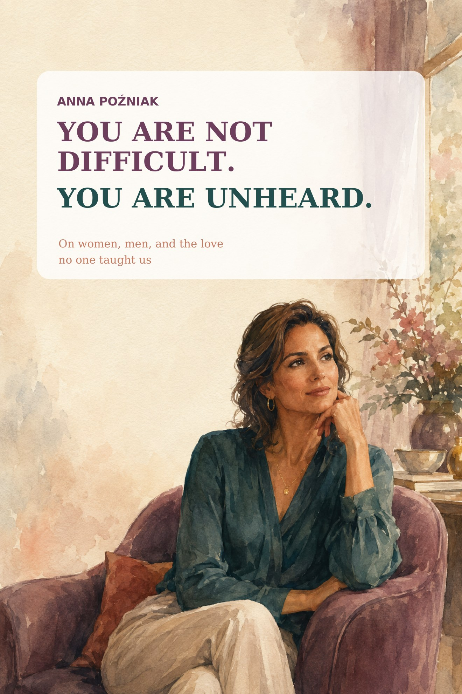

Wystarczająco Dobry Mężczyzna
Dla mężczyzn, którzy noszą w sobie presję, samotność i zmęczenie byciem silnym. Wydanie polskie.
od 20 zł
Zobacz książkę →
Biblioteka

Dla mężczyzn, którzy noszą w sobie presję, samotność i zmęczenie byciem silnym. Wydanie polskie.

For men who carry pressure, loneliness and the exhaustion of always being strong. English edition.

O kobietach, mężczyznach i miłości, której nikt nas nie nauczył. Wydanie polskie.

On women, men, and the love no one taught us. English edition.
E-book · Polski
Książka dla mężczyzn, którzy każdego dnia czują ciężar obowiązków, presji i oczekiwań. Dla tych, którzy starają się być silni, odpowiedzialni, opanowani… nawet gdy wewnątrz wszystko krzyczy. To opowieść o mężczyźnie, który daje więcej, niż powinien, i który powoli gubi w tym samego siebie.
Ta książka nie mówi Ci, jak żyć. Nie daje obietnic. Przypomina: nie musisz być idealny, nie musisz niczego udowadniać, nie musisz dźwigać całego świata na swoich barkach.
Co znajdziesz w środku
Darmowy fragment
Znasz to uczucie aż za dobrze. Jakby ktoś zaciskał Ci dłoń na piersi. Jakbyś był gotowy biec, choć nikt nie dał strzału startowego.
Sam nie wiesz, przed czym uciekasz. Może przed odpowiedzialnością. Może przed porażką. Może przed ciszą, która przypomina Ci, jak bardzo jesteś zmęczony.
Słowo „muszę” stało się częścią Twojego oddechu. Muszę zarabiać. Muszę być silny. Muszę wszystko ogarniać.
A kiedy Ci się udaje – nikt tego nie zauważa. Ale wystarczy jeden raz, gdy nie dajesz rady – i czujesz, jakbyś zawiódł cały świat.
Nie jesteś robotem. Nie jesteś tytanem. I nie musisz nim być.
Jest w Tobie chłopiec, który chciał tylko, żeby ktoś go docenił. Nie za wyniki. Nie za sukcesy. Po prostu za to, że próbował.
Czasem mężczyzna nie potrzebuje rady. Potrzebuje tylko, żeby ktoś zapytał: „Jak się dziś czujesz?”. I żeby odpowiedź mogła brzmieć: „Źle”.
Bez analizowania. Bez oceniania. Bez „musisz być silny”.
Zatrzymaj się teraz. Zamknij oczy. Oddychaj.
Nie po to, żeby się uspokoić. Ale po to, żeby poczuć, że naprawdę istniejesz.
Że Twoje ciało to nie tylko narzędzie do pracy. Że Twój umysł to nie tylko plany i obowiązki. Że jest w Tobie ktoś, kto wciąż chce po prostu być.
Pewien mężczyzna powiedział mi kiedyś: „Nie pamiętam, kiedy ostatnio nie czułem presji”.
I może o to właśnie chodzi – żeby zacząć od jednego dnia, w którym nie musisz niczego udowadniać.
Zrób to teraz. Nie jako ćwiczenie. Nie jako zadanie.
Usiądź. Zamknij oczy. Oddychaj powoli. Poczuj, jak opadają Twoje ramiona. Poczuj, że nie musisz być czujny. Poczuj, że nie musisz niczego naprawiać. Poczuj, że dziś wystarczy, że jesteś.
Nie jesteś złym człowiekiem. Nie zawiodłeś. Nie musisz dłużej uciekać.
Rozdziały 2–9 czekają w pełnej wersji e-booka - o wewnętrznym głosie, samotności, puszczaniu i o tym, że wystarczysz dokładnie taki, jaki jesteś.
Kup cały e-bookWystarczająco Dobry Mężczyzna
E-book · English
A book for men who feel the burden of responsibilities, pressure and expectations every day. For those who try to be strong, responsible, composed... even when everything is screaming inside. It's a story about a man who gives more than he should, and who slowly loses himself in it.
This book doesn't tell you how to live. It makes no promises. It reminds you: you don't have to be perfect, you don't have to prove anything, you don't have to carry the whole world on your shoulders.
What's inside
Free chapter
You know this feeling all too well. As if someone was pressing their hand on your chest. As if you were ready to run even though no one gave you the starting shot.
You don't know what you're running from. Maybe from responsibility. Maybe from failure. Maybe from the silence that reminds you how tired you are.
The word "I have to" has become part of your breath. I have to earn money. I have to be strong. I have to manage everything.
And when you succeed, no one notices. But all it takes is one time when you can't cope - and you feel like you've failed the whole world.
You are not a robot. You are not a titan. And you don't have to be.
There is a boy inside you who just wanted someone to appreciate him. Not for results. Not for success. Simply for trying.
Sometimes a man doesn't need advice. He just needs someone to ask, "How are you feeling today?" And for the answer to be allowed to be: "Not great."
Without analyzing. No judgment. No "you have to be strong".
Stop now. Close your eyes. Breathe.
Not to calm down. But to feel that you really exist.
That your body is not just a tool for work. That your mind is not only about plans and responsibilities. That there is someone inside you who still just wants to be.
A man once told me, "I can't remember the last time I didn't feel pressured."
And maybe that's the point - to start with one day where you don't have to prove anything.
Do it now. Not as an exercise. Not as a task.
Sit down. Close your eyes. Breathe slowly. Feel your shoulders drop. Feel like you don't have to be vigilant. Feel like you don't have to fix anything. Feel that today it is enough that you are.
You're not a bad person. You didn't disappoint. You don't have to run away anymore.
Chapters 2-9 are waiting in the full e-book - on the voice within, loneliness, letting go, and the fact that you are exactly enough, just as you are.
Buy the full e-bookThe Good Enough Man
E-book · Polski
Książka o kobietach, które latami były silne dla wszystkich - tylko nie dla siebie. O mężczyznach, którzy nie zawsze wiedzą, jak nazwać to, co czują. I o miłości, która najczęściej nie kończy się dlatego, że ktoś przestał kochać, tylko dlatego, że nikt nas nie nauczył, jak naprawdę ze sobą rozmawiać.
To zbiór prawdziwych historii kobiet i mężczyzn - o czekaniu, aż ktoś się domyśli, o cichych wieczorach we dwoje, o strachu przed samotnością i o tym, co zostaje, kiedy w końcu przestajemy udawać. Nie po to, żeby kogoś oceniać. Po to, żeby w końcu poczuć się usłyszaną.
Co znajdziesz w środku
Część I — Zanim zaczniemy się rozumieć
Część II — Miłość, która nie zawsze ma imię
Część III — Kobieta i mężczyzna
Część IV — Odnaleźć siebie
Darmowy fragment
Przez lata słyszałyśmy, że miłość powinna przyjść sama. Że kiedy spotkamy odpowiedniego mężczyznę, wszystko będzie proste. Że jeśli naprawdę nas kocha, będzie wiedział, czego potrzebujemy. Że jeśli naprawdę kochamy, powinnyśmy poświęcać się bez końca.
Tylko że życie wygląda inaczej.
Spotykamy się. Zakochujemy. Rozczarowujemy.
Czasami płaczemy przez kogoś, kto nawet nie wie, że cierpimy. Czasami odchodzimy od ludzi, których kochamy. Czasami zostajemy za długo.
Ta książka nie jest o tym, jak znaleźć idealnego mężczyznę. Bo idealni ludzie nie istnieją.
Jest o tym, jak zrozumieć siebie. Jak zrozumieć mężczyzn. Jak przestać walczyć przeciwko sobie nawzajem.
Bo prawda jest taka, że większość kobiet nie chce księcia z bajki. Chce człowieka. Kogoś, przy kim można być sobą. Przytulić się po ciężkim dniu. Porozmawiać. Poczuć bezpieczeństwo. Poczuć, że nie trzeba niczego udawać.
I większość mężczyzn chce dokładnie tego samego.
Tylko że przez lata nauczyliśmy się patrzeć na siebie przez własne wyobrażenia. My mamy swoje wyobrażenie o mężczyznach. Oni mają swoje wyobrażenie o kobietach. I bardzo często oboje jesteśmy przekonani, że wiemy, czego chce ta druga strona.
A może powinniśmy po prostu zacząć ze sobą rozmawiać. O potrzebach. O emocjach. O bliskości. O seksie. O bezpieczeństwie. O tym, czego nam brakuje.
Może problem nie polega na tym, że kobiety są zbyt trudne. Ani na tym, że mężczyźni są zbyt zamknięci.
Może po prostu nikt nas nie nauczył, jak naprawdę ze sobą rozmawiać.
I właśnie o tym jest ta książka.
Wszystkie 24 rozdziały czekają w pełnej wersji e-booka - o kobietach, mężczyznach i miłości, której nikt nas nie nauczył.
Kup cały e-bookNie Jesteś Trudna. Jesteś Niewysłuchana.
E-book · English
A book about women who spent years being strong for everyone else - just not for themselves. About men who don't always know how to name what they feel. And about love that most often doesn't end because someone stopped loving, but because no one ever taught us how to truly talk to each other.
It's a collection of real stories of women and men - about waiting for someone to figure it out, quiet evenings together, the fear of loneliness, and what remains once we finally stop pretending. Not to judge anyone. To finally feel heard.
What's inside
Part I — Before We Begin to Understand Each Other
Part II — Love That Does Not Always Have a Name
Part III — Woman and Man
Part IV — Finding Yourself Again
Free chapter
For years, we were told that love should simply happen. That when we met the right man, everything would be easy. That if he truly loved us, he would know what we needed. That if we truly loved him, we should sacrifice ourselves without end.
But life looks different.
We meet. We fall in love. We are disappointed.
Sometimes we cry because of someone who does not even know we are hurting. Sometimes we leave people we love. Sometimes we stay too long.
This book is not about finding the perfect man, because perfect people do not exist.
It is about understanding yourself. Understanding men. And learning to stop fighting one another.
The truth is that most women do not want a fairy-tale prince. They want a human being—someone beside whom they can be themselves, cuddle after a hard day, talk, feel safe, and feel no need to pretend.
Most men want exactly the same thing.
Yet for years we have learned to see one another through our own assumptions. We have our ideas about men; they have theirs about women. Very often, both sides are convinced they know what the other wants.
Perhaps we should simply begin talking—to each other—about needs, emotions, intimacy, sex, safety, and what is missing.
Maybe the problem is not that women are too difficult or that men are too closed off.
Maybe no one ever taught us how to truly talk to one another.
That is what this book is about.
All 24 chapters are waiting in the full e-book - on women, men, and the love no one taught us.
Buy the full e-bookYou Are Not Difficult. You Are Unheard.
Asystent Anny
Wirtualny asystent AI
To rozmowa z AI, nie z terapeutą. W nagłych sytuacjach zadzwoń pod 112 lub na Kryzysowy Telefon Zaufania 116 123.